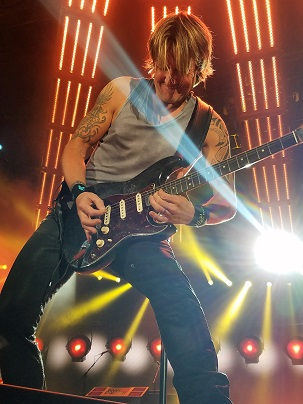
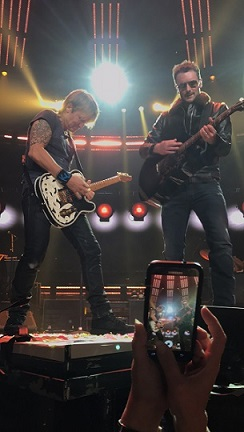
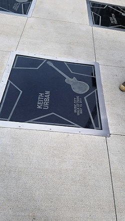
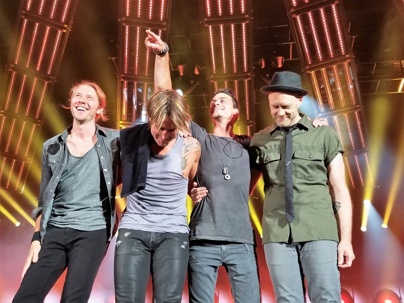

Keith always does something special when he goes home to Nashville. he brought out fellow country artist Eric Church for the ending of his show, it was the best one I've ever been to. Keith Also has his Star on the country walk of fame in Downtown Nashville.

I had an opportunity to meet one of the greatest country artists around today, Keith Urban. Earlier this year I attended his back to back performance in Gilford New Hampshire they were both amazing and sold out. Keith is one of my favorite artists and meeting him was amazing. He has a tattoo on his lower left arm of a phoenix, I got one similar to his in the same place. Keith is inspirational and a role model to millions. his final show of his 2016 U.S tour was in Brooklyn New York, I was there marking that show the sixth show of the summer for me. After seeing him so many times this summer I took up the guitar and I am learning how to play, very slowly of course. He gives me faith and makes me feel free and makes me enjoy everyday of my life.